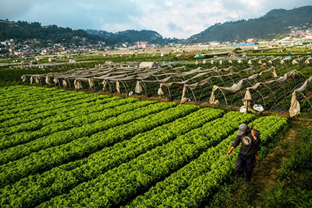

GEOGRAPHY OF BENGUET

Benguet Province occupies the southern tip of the Cordillera Mountain Range in the northern part of the Luzon Island. It has a Mountainous terrain of peaks, ridges and canyons; and a temperate and generally pleasant climate. Its capital is La Trinidad.Aug 15, 2023